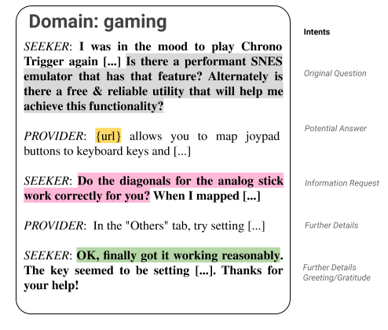
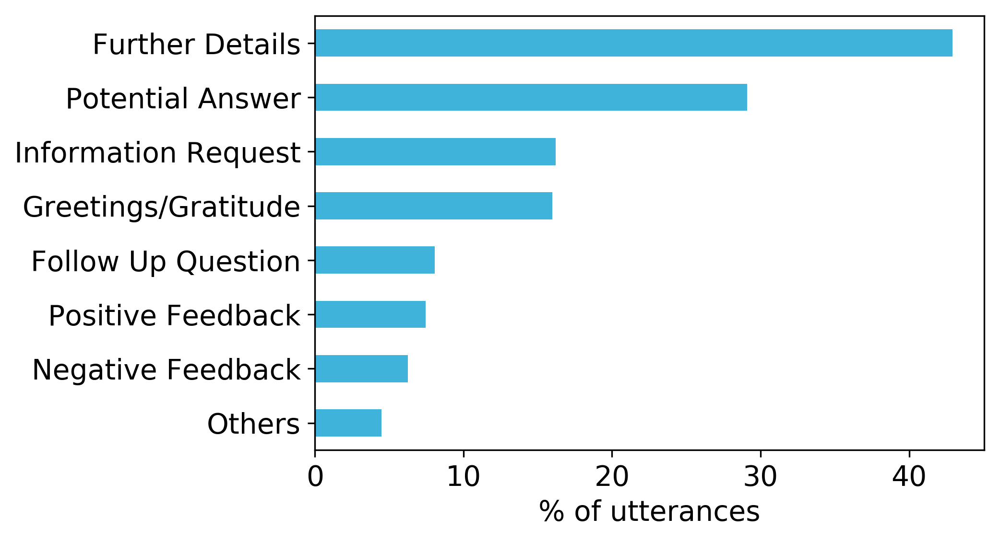

MANtIS
a multi-domain information seeking dialogues dataset


MANtIS - a multi-domain information seeking dialogues dataset
Introduction
MANtIS is a multi-domain dialogue dataset contatining information-seeking interactions from the community question-answering portal Stack Exchange. Unlike previous information-seeking dialogue datasets that focus on only one domain, MANtIS has diverse conversations from 14 different sites, such as physics, travel and worldbuilding. Additionaly, all dialogues have a url, providing grounding to the conversations. It can be used for the following tasks: conversation response ranking/generation and intent prediction. We provide manually annotated intent labels for more than 1300 multi-turn dialogues. See an example of the annotations on the right side of each utterance of a conversation extracted from the gaming domain:

The conversations of the dataset are multi-turn, multi-intent, containing clarification questions and complex information needs, grounded in web pages and extracted from different domains.
MANtIS - complete JSON
The dataset has over 80,000 dialogues between information seekers and information providers from the following domains of Stack Exchange: apple, askubuntu, dba, diy, electronics, english, gaming, gis, physics, scifi, security, stats, travel and worldbuilding. In order to ensure that each conversation in our dataset follows our set of criteria, we have devised a list of six conditions that must hold for each conversation:
- The entire conversation takes place between two users (the information seeker who starts off the conversation and the information provider). Conversations with three or more users are not considered.
- The conversation consists of at least 2 utterances per user.
- At least one of the information provider’s utterances contains a hyperlink (providing grounding).
- The conversation has not been marked as Spam or Offensive.
- The conversation has not been edited or marked as deprecated on the Stack Exchange portal.
- If the final turn in the conversation belongs to the information seeker, it contains positive feedback (identified using the vader score).
The processed JSON dataset is available for download here, with the following format:
- dialog_id: a unique id for a dialog - ids are consecutive
- category: domain to which the dialogue belongs
- title: dialog title from the forum
- dialog_time: the time that the first utterance of the dialog was posted
- utterances: a list of utterances in this dialog
- actor_type: user or agent (“user” refers to the information seeker that initiates the conversation. The information provider is considered as “agent”)
- utterance_pos: the utterance position in the dialog (starts from 1)
- utterance: the content of the utterance
- votes: number of votes the answer received from the community
- utterance_time: the time that the utterance was posted
- is_answer: whether the utterance is selected as the best answer by the community
- id: the id of the original post/comment (for comments, the syntax is {post_id}_{comment_id})
MANtIS - intent labeled JSON
To further enrich the dataset, we have employed 2 specialist annotators to mark a subset of 1356 dialogues (Krippendorff’s agreement of 0.71) from the dataset with intent labels for each utterance. The following schema was used:
| Intent | Description | Example snippet |
|---|---|---|
| Further Details | A user (either asking or answering user) provides more details. | Hi. Sorry for taking so long to reply. The information you need is … |
| Follow Up Question | Asking user asks one or more follow up questions about relevant issues. | Thanks. I really have one more simple question – if I … |
| Information Request | A user (either asking or answering user) is asking for clarifications or further information. | What is the make and model of the computer? Have you tried installing … Your advice is not detailed enough. I’m not sure what you mean by … |
| Potential Answer | A potential solution, provided by the answering user. | Hi. To change the PIN on your phone, you may follow the steps below:.. |
| Positive Feedback | Asking user provides positive feedback about the offered solution. | Hi. That was exactly what I needed. Thanks! |
| Negative Feedback | Asking user provides negative feedback about the offered solution. | Thanks for you help! However, the fix did not work.. |
| Greetings / Gratitude | A user (asking or answering user) offers a greeting or expresses gratitude. | Thank you for all the responses! |
| Other | Anything that does not fit into the above categories. | :) :) :) . shrug |
The distribution of labels across all annotated conversations is shown in the figure below, with Original Question, Potential Answer and Further Details being the most frequent labels. 21% of utterances were annotated with more than one label, indicating the multi-intent nature of our dataset.

The JSON dataset with the labeled intents is available for download here
MANtIS - response-ranking format
We also provide the dataset in a format suited for directly training a neural ranking networks. Firstly, each conversation is split into chunks of consecutive utterances that have at least 2 utterances per user and where the last utterance is generated by the information provider. Therefore, if a conversation has 3 turns per user, it will have 2 possible contexts (the first 2 and the first 3 utterances per user).
Afterwards, for each such context, we generate negative sampled instances in which the current last utterance of the provider is replaced with a negative sample obtained by using BM25 with the correct answer as query. For the the mantis_10 variant of the dataset, we randomly generate 10 negative samples from the top 1000 results of BM25, whereas for the mantis_50 variant we generate 50 negative samples. The newly obtained datasets are saved in a .tsv format in the following format:
label \t utterance_1 \t utterance_2 \t ...... \t candidate_response, where:
labelis 1 when thecandidate_responseis the true response and 0 when it is a negative sampleutterance_{x}is a utterance of one of the 2 userscandidate_responseis the answer of the current context
The mantis_10 response ranking dataset in .tsv format is available for download here
The mantis_50 response ranking dataset in .tsv format is available for download here
Questions and citation
You can contact us via email to authors (available on the paper) or by creating issues in the github project. If you use MANtIS in your work please include a citation to the paper introducing the dataset:
@article{mantis,
title={Introducing MANtIS: a novel Multi-Domain Information Seeking Dialogues Dataset},
author={Gustavo Penha, Alexandru Balan, Claudia Hauff},
journal={arXiv preprint arXiv:},
year={2019}
}
Using the code
Considering that Stack Exchange has more than 170 domains and we processed 14 of thoose, we also provide the source code for extracting the dataset for any of the existing domains.
Installing dependencies
In order to install all the required external dependencies, please run pip install -r requirements.txt in the root folder of the project.
We recommend using a virtual enviroment with Python >= 3.6.8. Python 2 is not supported.
For NLP, the project uses spacy and the en_core_web_sm
model. To download the model, please run python -m spacy download en_core_web_sm
Fetching the .xml files for each stackExchange site
As mentioned previously, we use StackExchange as it offers a public dump of its conversations. To fetch the initial
stackExchange dump, you need to run the fetch_stackexchange_dump.sh script, which
is located in the root folder of the project. This will create a folder called stackexchange_dump and will put all the .xml
files there. During the process, it might ask to install a utility to unzip .7z files.
However, the downloaded .xml files are in a structure that makes it difficult to process conversations. For this reason,
we have taken inspiration from MSDialog’s JSON structure for their dataset and
created a pipeline that aggregates the XML data into a single JSON file.
Building the JSON dataset
To run the script that turns the XML dump into a JSON file similar to
MSDialog - Complete, you are required to run
(in the root folder) python run.py json {topic}, where {topic} is a supported
topic from StackExchange. The updated list of topics is being maintained
here.
The output is stored in stackexchange_dump/{topic}/data.json. To obtain a set of datasets
from a handpicked list of domains, please run use the run.all.sh script.
In order to merge multiple json datasets into a single, multi-domain dataset, you are required
to run python run.py merge {topic1},{topic2},{topic3}...{topicN}, where {topicX} is a topic
for which there is already a constructed json dataset. The output is stored in
stackexchange_dump/merged_{allocation}.tsv, where {allocation} is either train, dev or test.
JSON data format:
- dialog_id: a unique id for a dialog - ids are consecutive
- category: domain to which the dialogue belongs
- title: dialog title from the forum
- dialog_time: the time that the first utterance of the dialog was posted
- utterances: a list of utterances in this dialog
- actor_type: user or agent (“user” refers to the information seeker that initiates the conversation. All the other conversation participants are considered as “agents”)
- utterance_pos: the utterance position in the dialog (starts from 1)
- utterance: the content of the utterance
- votes: number of votes the answer received from the community
- utterance_time: the time that the utterance was posted
- is_answer: whether the utterance is selected as the best answer by the community
- id: the id of the original post/comment (for comments, the syntax is {post_id}_{comment_id})
Building the response ranking training datasets
To run the script that turns the JSON file to a training dataset similar to
MSDialog - ResponseRank, you need to run
python run.py training [easy]. Without specifying easy, the resulting dataset will contain
50 negative samples (sampled from all domains) for each true agent response. In case the flag is
specified, only 10 negative samples (sampled from the same domain as the agent response) will be
added for each true agent response.
The output is stored in stackexchange_dump/data_{allocation}.tsv. A lookup .txt file is generated
for each file that contains for each row the ID of the original conversation in the source JSON.